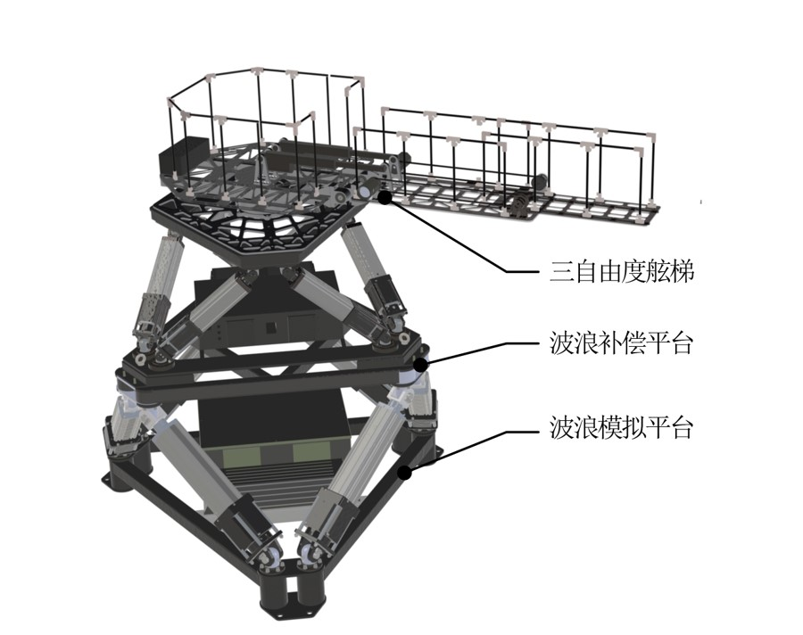
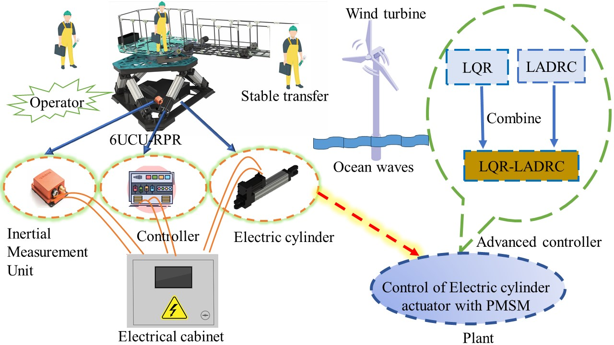
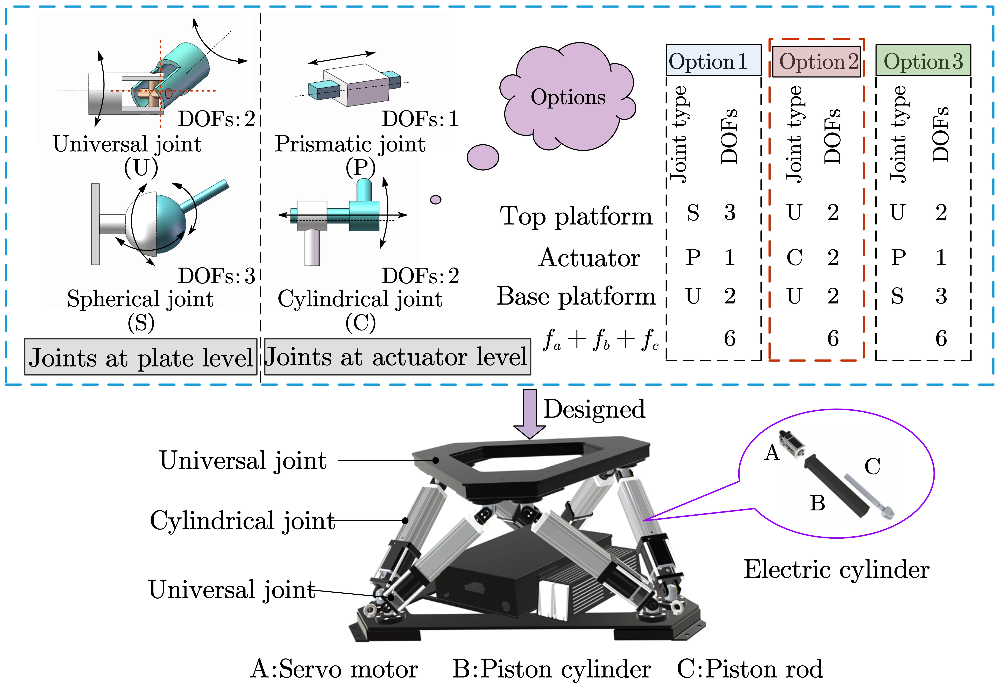
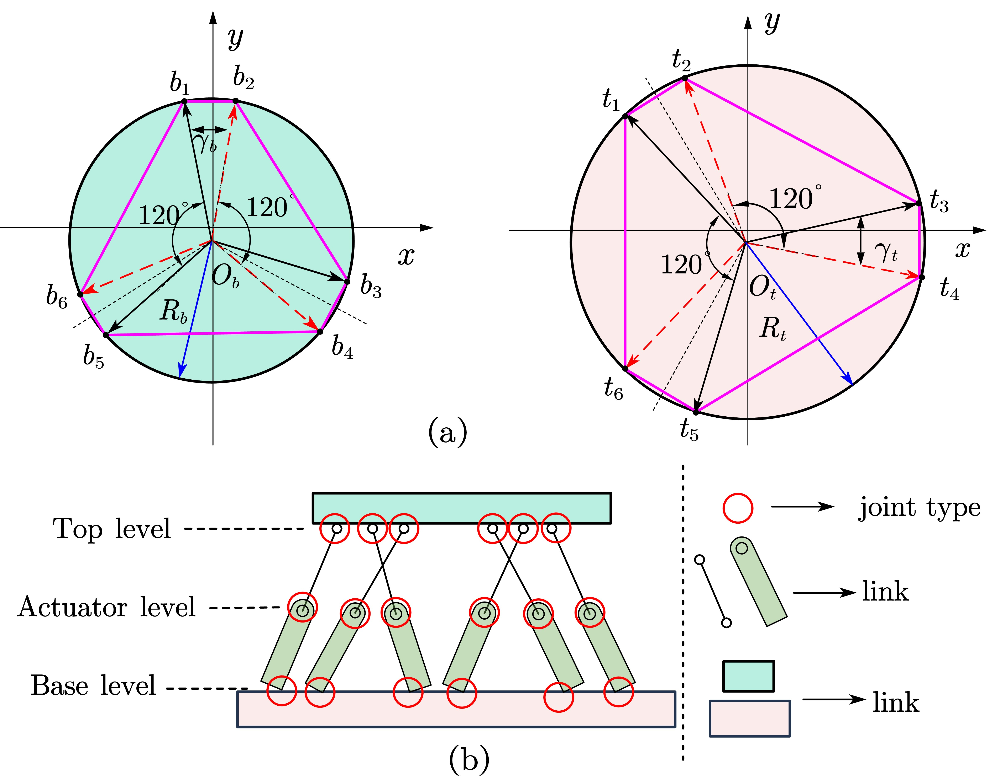
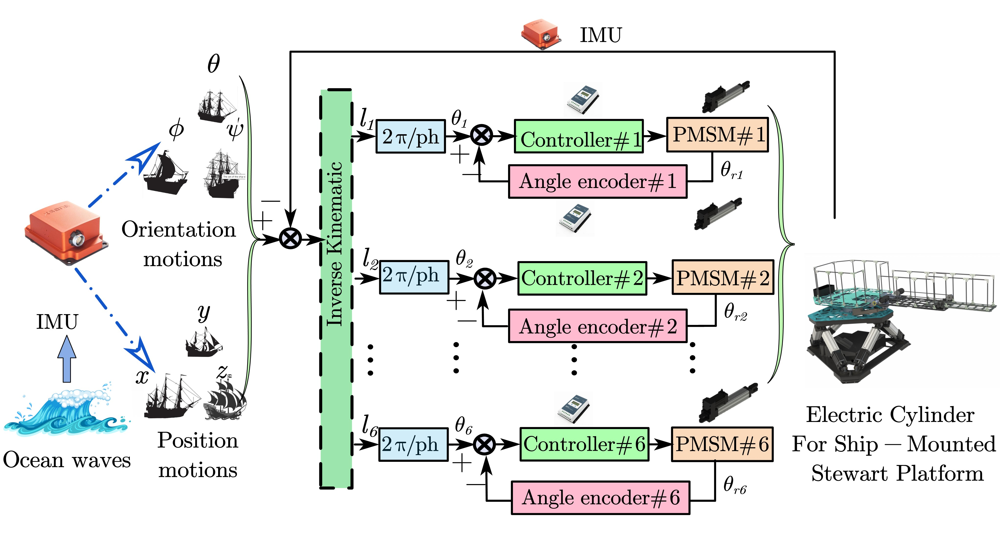
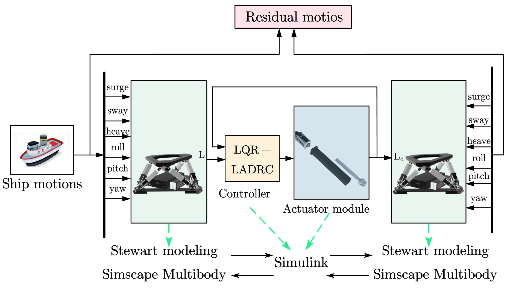
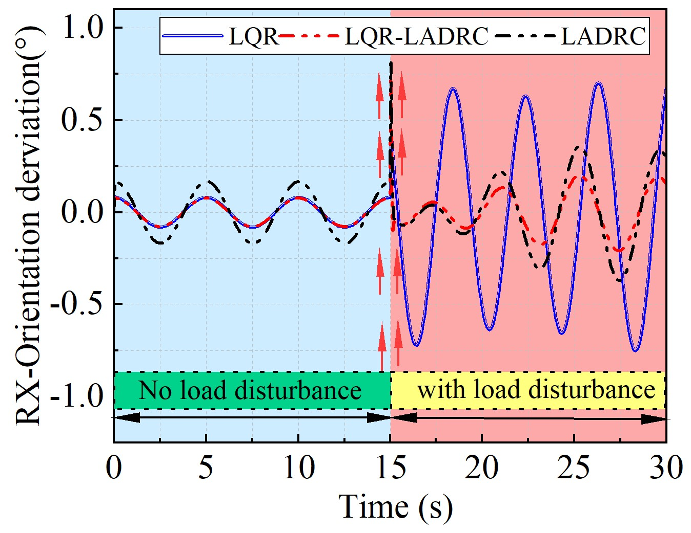

Project 1: Robot Perception and 3D Reconstruction - Robotics Algorithm Engineer (Intern) Qiaojie ShuWu Company | *Jul 2025 - Sep 2025*.
Description: Based on the collected RGB video streams, algorithms such as VGGT, DGGN-SLAM, Colmap, and 3D-GS were employed to achieve 3D reconstruction and high-fidelity rendering of indoor and outdoor scenes. The optimized mesh models were extracted and imported into Isaacsim to construct a simulation environment suitable for robot perception and navigation tasks
1Developed and integrated 3D reconstruction algorithms (VGGT, DROID-SLAM, MegaSAM, Colmap, 3DGS) using RGB videos to achieve high-precision scene reconstruction.
2.Applied PGSR to extract mesh models and built simulation datasets in Isaac Sim for robot perception tasks.
3.Independently conducted debugging and testing for multiple algorithms and authored comprehensive technical reports and reproduction documentation, delivering a reliable basis for the team's subsequent research.
COLMAP+3DGRUT
PGSR(COLMAP+3DGS+MESH)
Project 2: Design and Control of a Stabilization Platform Based on IMU and Visual Fusion (Postgraduate stage).
This work received in a 2-million-RMB horizontal project sponsored by China Guangdong Nuclear Power Group (CGN), titled "Research on Motion Control of a Six-Degree-of-Freedom Stable Platform at Sea", and successfully secured a grant of 300,000 RMB from the Guangdong Province (Approval Number: 2023A1515240062).
Description: Offshore operations are vulnerable to the ship disturbance caused by waves. To improve the accuracy of offshore equipment, ensure the safety of operation personne and increase the window for offshore operations. Designed a 6-DOF Stewart parallel platformto compensate for the wave motion disturbance.
1.Designed a doubled-motion platform based on the 6UCU Stewart parallel mechanism, where the bottom platform simulates wave motion and the top platform is stabilized by controlling the length of six limbs to isolate the vibration of waves. Completed the forward, inverse kinematic solution, workspace analysis, and control of 6UCU Stewart parallel.
2.Proposed an improved linear active disturbance reject control (ILADRC) based on linear quadratic regulator (LQR) in joint space for each chain electric-driven actuator (PMSM) to achieve accurate stabilization of the top platform.
3.Utilized LQR to replace the series PD control in the traditional LADRC to solve the problem of controller bandwidth and its stability is verified using the Lyapunov theory. Used the LESO to estimate and compensate for the total disturbance of system. Verified the proposed controller ILADRC with the Lyapunov theory. Solved the problem of overshooting and oscillation of traditional PI control, and improved the anti-disturbance ability of the system.
Achievement : Wenxuan Wang, Yang Zhang, Peng Xu*, Bing Li*. Linear active disturbance rejection control with linear quadratic regulator for Stewart platform in active wave compensation system. Applied Ocean Research,2025 (JCR Q1). paper
Wenxuan Wang, Xiaokai Cui, Peng Xu*, Bing Li*. An improved linear quadratic regulator of shipborne Stewart platform for wave compensation, IEEE International Conference on Robotics and Biomimetics, Bangkok, Thailand,2024 (EI). paper








6-DOF Stabilized Platform control (vibration isolation, motion compensation)
Motion Simulation - Compensated platform simulation (real-time calculations)
Prototypes and experiments
Project 3: Hybrid variable stiffness collaborative robot for abrasive machining. (Postgraduate stage)
Members: Zhisen Li, Wenxuan Wang, Chenghao Huang, Kun Chen, Shen Xu,Bin Li*, Peng Xu*. --- Dec.2023 - Sept.2024
Description: Designed a hybrid variable stiffness collaborative robot for grinding of complex curved components. The hybrid robot combines the high stiffness and high load capacity of parallel robots and the large workspace characteristics of tandem robots to perform a larger range of actions while maintaining structural stability.
1.A variable stiffness joint based on a rope-pulley mechanism is proposed with the goal of high compactness and high torque density. The compact and modular design of the joint structure optimises the space utilisation of the robot.
2.Proposed a novel two-rotation-one-translation 3-DOF redundant parallel end mechanism '2UPR-2RRU" , and a lightweight structural design of the parallel end mechanism is carried out.
3.Developed An improved LADRC to compensate the position error caused by uncertain disturbance by introducing an exponential function to improve the performance of the actuator. A fuzzy logic loop is introduced into the adaptive term of the traditional adaptive impedance system, and a fuzzy adaptive conductance controller based on fuzzy inference rules is proposed to solve the force overshooting problem in the grinding force tracking process.
Achievement : National Third Prize of the 6th Postgraduate Robot Innovation and Design Competition.
.jpg)
.jpg)
.jpg)
Project 2 Video
Project 4: National Undergraduate Training Program for Innovation and Entrepreneurship: 'Core Traffic' -Designed of A New Type of Traffic Direction Robot (Project Number:202210731019--- Undergraduate period)
Members: Wenxuan Wang, Zixiang Nie, Zhenyu Chen, Huipeng He, Chaolei Pang, Shijun Hu*. --- Jan.2022 - Jan.2023
Description: To enhance operational efficiency and reduce safety incidents in traffic police work, we designed a mobile intelligent robot that integrates robotic technology with traffic management. This robot can operate continuously for 24 hours, addressing the safety risks traffic police face due to fatigue, particularly during night shifts. The robot's mechanical structure consists of three main components: the body, robotic arm, and chassis.
1.Designed an intelligent traffic-directing robot based on the STM32 chip, equipped with two 7-DOF humanoid robotic arms and four Mecanum wheels for mobility. This robot replaces humans in directing traffic and serves as a mobile electronic police unit.
2.Controlled robotic arm movement by adjusting the PWM duty cycle to manipulate the rotation angle of each servo, allowing the two 7-DOF arms to accurately replicate traffic police hand signals.
3.Incorporated image recognition technology using cameras mounted on the robotic arms. Combined with its mobility provided by the Mecanum wheels, the robot functions as a mobile electronic police officer, capable of capturing traffic violations and overcoming the limitations of stationary electronic police systems.
Achievement : National First Prize of the 23rd China Robotics and Artificial Intelligence Competition. National First Prize of the International Youth Artificial Intelligence Innovation Competition..
Project 3 Video
Project 5: A Bionic Ant Robot for Rescue with Arduino chip (Undergraduate period)
Members: Wenxuan Wang, Xinyue he, Chaolei Pang, Dongya Yang*. --- Oct.2021 - Jun.2022
Description: Bio-inspired ant robots enhance rescue efficiency in confined or hazardous areas (e.g., earthquakes, collapses) through swarm intelligence and adaptability, reducing risks for human responders.
1.Responsible for the mechanical and hardware design, utilize the chip - Arduino to control Bionic Ant motion
2.Implemented the control of 6 legs with 20 servo motors, using USART communication and Bluetooth sensor interaction control.
3.This is an open source project on the web, we have changed the outrigger motor improve robot robustness.
Project 4 Video
Project 6: National Undergraduate Training Program for Innovation and Entrepreneurship: Smart Home Security Robot (Project Number:202110731012---Undergraduate period)
Members: Wenxuan Wang, Chongzheng Zhang, Wenhui Cai, Huipeng He,Shuzhen Zhang*. --- Oct.2021 - Jun.2022
Description: Empty nesters have become a growing concern in our country, with numerous accidents occurring each year due to the unexpected deaths of elderly individuals living alone. To address the safety issues faced by seniors living independently, we designed a smart home safety and security robot utilizing Arduino, ESP8266 WiFi, and the HC-05 Bluetooth module. This robot offers various features including home security threat detection, smoke alarms, voice recognition, visual tracking, human-machine interaction, and intelligent waste collection, enhancing overall home safety for elderly individuals.
1.Responsible for the mechanical design, imulation modeling, and motion control of the robot, ensuring precise functionality and performance..
2.Developed the control system for both the robot's chassis movement and the 5-DOF robotic arm's grasping actions using an Arduino chip.
3.Implemented obstacle avoidance by integrating ultrasonic sensors with Arduino, using USART communication and adjusting the baud rate for seamless sensor interaction.
Achievement : National Second Prize of the 3rd China University Intelligent Robot Creative Competition
Project 5 Video
Project 7:National Undergraduate Training Program for Innovation and Entrepreneurship: Intelligent Delivery Robot Based on Embedded Management (Project Number:202110731014 ---Undergraduate period)
Members:Chaolei Pang, Wenxuan Wang, Mingfei Qing, Bowen Zhou, Xiangwan Ye, Dongya Yang*.--- Oct 2021 - June 2022
Description: Researched and developed an intelligent courier delivery robot based on an embedded management system, capable of climbing stairs. By utilizing triangular track wheels, the robot overcomes the limitation of current delivery vehicles that cannot navigate stairs. Additionally, a database was integrated to manage back-end logistics information, combining hardware and software to achieve efficient delivery operations.
1. Integrated a triangular wheel and track structure to overcome the limitation of movement on flat surfaces, allowing the robot to climb stairs. A multi-degree-of-freedom robotic arm was added to the top of the vehicle for automatic door opening.
2. Implemented a QR code-based real-name system for secure parcel pickup. Once the microcontroller detects the corresponding QR code, it triggers the electromagnetic lock to open the delivery box while simultaneously storing the data in the backend database.
3. Led the mechanical design of the robot, including chassis motion control and the gripping actions of the robotic arm.
Achievement : National First Prize of the 14th National 3D Digital Innovation Design Competition.
Project 6 Video
Project 8: A Multifunctional Robot for Mine Rehabilitation Grass Laying(Undergraduate period)
Members: Wenxuan Wang, Hongchang Zhao, Chaolei Pang, Huipeng He, Tianchi Wang, Yuan He*.--- June 2020 - June 2021
Description: Developed an ecosystem restoration robot for mine rehabilitation and landslide management, capable of performing multiple functions including drilling, pouring, laying, and spraying grass seeds. This robot facilitates the process of mulching and vegetation restoration in degraded areas.
1. Led the design and machining of the overall mechanical structure, including model animation, chassis motion control, and robotic arm drilling functions.
2. Equipped the robot with a dual-track mobile chassis, enabling it to navigate the complex terrain of mining areas. Integrated a hydraulic telescopic arm to control the auger for drilling, a seeding mechanism for spraying grass seeds, and a belt conveyor system for laying grass squares.
3. Utilized an STM32C8T6 as the control core, incorporating GPS positioning, Mobileye, and an EyeQ3 camera. The robot's movement was driven by a geared motor, while serial communication managed the actions of drilling and grass seed spraying.
Achievement : Provincial Second Prize The 10th National Student Mechanical Innovation Design Competition.
Project 7 Video
Project 9: National Engineering Training Comprehensive Ability Competition for College Students - Intelligent Logistics Handling Track (Undergraduate period)
Memebers: Wenxuan Wang, Xiangseng Kong, Chaolei Pang, Huipeng He, Dongya Yang*.--- Dec 2020 - July 2021
Description: Designed an autonomous trolley capable of completing material handling tasks within a given field. By scanning QR codes to identify the logistics sequence, the robot autonomously determines the appropriate materials to transport and delivers them to the designated areas.
1. Utilized OpenMV for color recognition in logistics. Identified colors are sorted and transmitted to the robotic arm via serial commands to perform the gripping actions.
2. Arranged laser range finders in all four directions of the trolley to calculate the field size. Feedback from these sensors is used to establish a planar coordinate system for real-time trolley positioning.
4. Responsible for designing the mechanical structure of the handling trolley, implementing color recognition with OpenMV, and using an upper computer to control the robotic arm's gripping actions.
Achievement : Provincial Third Prize of National Engineering Training Comprehensive Ability Competition for College Students.